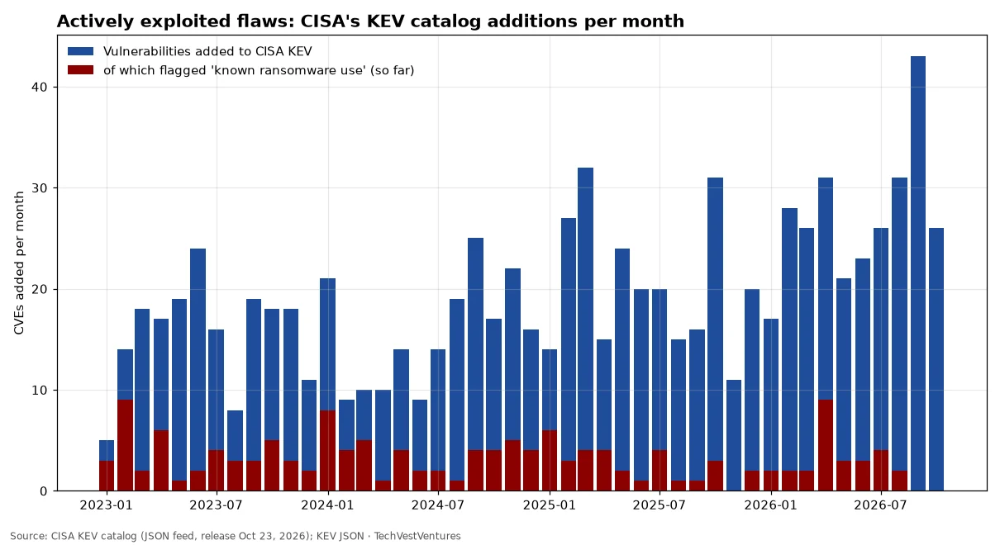

Q1. Exploited Flaws
Weekly Focus graphs, started Oct 25, 2026: new charts are added each week from primary or clearly named secondary data. Each caption names its sources and its caveats.

Every entry in CISA's Known Exploited Vulnerabilities catalog is a flaw attackers are confirmed to be using in the wild. 2026 has already logged 272 additions (to Oct 23) vs 208 by the same date in 2025 and 245 in all of 2025; September 2026's 43 was the busiest month since at least January 2023. October's additions include many internet-facing edge and remote-access products (Fortinet, Palo Alto PAN-OS, Ivanti Connect Secure, Citrix NetScaler, BeyondTrust, Cisco). 2026 leaders: Microsoft 40, Cisco 19, Fortinet 9, Apple 9, Linux 8. The red 'ransomware' share looks low for recent months partly because CISA adds that flag later, after campaigns are attributed.
Sources: CISA KEV catalog (JSON feed, release Oct 23, 2026) KEV JSON